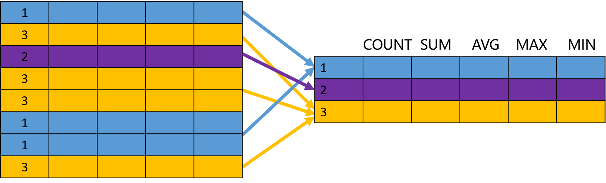
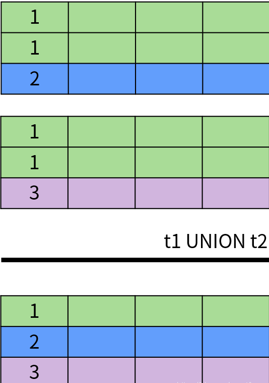

# SQL–一切皆关系
在计算机领域有许多伟大的设计理念和思想，例如：
- 在 Unix 中，一切皆文件。
- 在面向对象的编程语言中，一切皆对象。
关系数据库同样也有自己的设计思想：在 SQL 中，一切皆关系。
# 关系模型
关系模型（Relational model）由 E.F.Codd 博士于 1970 年提出，以集合论中的关系概念为基础；无论是现实世界中的实体对象还是它们之间的联系都使用关系表示。我们在数据库系统中看到的关系就是二维表（Table），由行（Row）和列（Column）组成。因此，也可以说关系表是由数据行构成的集合。
关系模型由数据结构、关系操作、完整性约束三部分组成。
- 关系模型中的数据结构就是关系表，包括基础表、派生表（查询结果）和虚拟表（视图）。
- 常用的关系操作包括增加、删除、修改和查询（CRUD），使用的就是 SQL 语言。其中查询操作最为复杂，包括选择（Selection）、投影（Projection）、并集（Union）、交集（Intersection）、差集（Exception）以及笛卡儿积（Cartesian product）等。
- 完整性约束用于维护数据的完整性或者满足业务约束的需求，包括实体完整性（主键约束）、参照完整性（外键约束）以及用户定义的完整性（非空约束、唯一约束、检查约束和默认值）。
# 面向集合
SQL（结构化查询语言）是操作关系数据库的标准语言。SQL 非常接近英语，使用起来非常简单。它在设计之初就考虑了非技术人员的使用需求，我们通常只需说明想要的结果（What），而将数据处理的过程（How）交给数据库管理系统。所以说，SQL 才是真正给人用的编程语言！😎
接下来我们具体分析一下关系的各种操作语句；目的是为了让大家能够了解 SQL 是一种面向集合的编程语言，它的操作对象是集合，操作的结果也是集合。
📝在关系数据库中，关系、表、集合三者通常表示相同的概念。
# SELECT
下面是一个简单的查询语句：
SELECT employee_id, first_name, last_name, hire_date | |
FROM employees; |
它的作用就是从 employees 表中查询员工信息。显然，我们都知道 FROM 之后是一个表（关系、集合）。不仅如此，整个查询语句的结果也是一个表。所以，我们可以将上面的查询作为表使用：
SELECT * | |
FROM (SELECT employee_id, first_name, last_name, hire_date | |
FROM employees) t; |
括号内的查询语句被称为派生表，我们给它指定了一个别名叫做 t。同样，整个查询结果也是一个表；这就意味着我们可以继续嵌套，虽然这么做很无聊。
我们再看一个 PostgreSQL 中的示例：
-- PostgreSQL | |
SELECT * | |
FROM upper('sql'); | |
| upper | | |
|-------| | |
| SQL | |
upper () 是一个大写转换的函数。它出现再 FROM 子句中，意味着它的结果也是一个表，只不过是 1 行 1 列的特殊表。
SELECT 子句用于指定需要查询的字段，可以包含表达式、函数值等。SELECT 在关系操作中被称为投影（Projection），看下面的示意图应该就比较好理解了。
除了 SELECT 之外，还有一些常用的 SQL 子句。
WHERE 用于指定数据过滤的条件，在关系运算中被称为选择（Selection），示意图如下：
ORDER BY 用于对查询的结果进行排序，示意图如下：
总之，SQL 可以完成各种数据操作，例如过滤、分组、排序、限定数量等；所有这些操作的对象都是关系表，结果也是关系表。
在这些关系操作中，有一个比较特殊，就是分组。
# GROUP BY
分组（ GROUP BY）操作和其他的关系操作不同，因为它改变了关系的结构。来看下面的示例：
SELECT department_id, count(*), first_name | |
FROM employees | |
GROUP BY department_id; |
该语句的目的是按照部门统计员工的数量，但是存在一个语法错误，就是 first_name 不能出现在查询列表中。原因在于按照部门进行分组的话，每个部门包含多个员工；无法确定需要显示哪个员工的姓名，这是一个逻辑上的错误。
所以说，GROUP BY 改变了集合元素（数据行）的结构，创建了一个全新的关系。分组操作的示意图如下：

尽管如此，GROUP BY 的结果仍然是一个集合。
# UNION
SQL 面向集合特性最明显的体现就是 UNION（并集运算）、INTERSECT（交集运算）和 EXCEPT/MINUS（差集运算）。
这些集合运算符的作用都是将两个集合并成一个集合，因此需要满足以下条件：
- 两边的集合中字段的数量和顺序必须相同；
- 两边的集合中对应字段的类型必须匹配或兼容。
具体来说，UNION 和 UNION ALL 用于计算两个集合的并集，返回出现在第一个查询结果或者第二个查询结果中的数据。它们的区别在于 UNION 排除了结果中的重复数据，UNION ALL 保留了重复数据。下面是 UNION 操作的示意图：

INTERSECT 操作符用于返回两个集合中的共同部分，即同时出现在第一个查询结果和第二个查询结果中的数据，并且排除了结果中的重复数据。INTERSECT 运算的示意图如下：
EXCEPT 或者 MINUS 操作符用于返回两个集合的差集，即出现在第一个查询结果中，但不在第二个查询结果中的记录，并且排除了结果中的重复数据。EXCEPT 运算符的示意图如下：
除此之外，DISTINCT 运算符用于消除重复数据，也就是排除集合中的重复元素。
SQL 中的关系概念来自数学中的集合理论，因此 UNION、INTERSECT 和 EXCEPT 分别来自集合论中的并集（∪ \cup∪）、交集（∩ \cap∩）和差集（∖ \setminus∖）运算。需要注意的是，集合理论中的集合不允许存在重复的数据，但是 SQL 允许。因此，SQL 中的集合也被称为多重集合（multiset）；多重集合与集合理论中的集合都是无序的，但是 SQL 可以通过 ORDER BY 子句对查询结果进行排序。
# JOIN
在 SQL 中，不仅实体对象存储在关系表中，对象之间的联系也存储在关系表中。因此，当我们想要获取这些相关的数据时，需要使用到另一个操作：连接查询（JOIN）。
常见的 SQL 连接查类型包括内连接、外连接、交叉连接等。其中，外连接又可以分为左外连接、右外连接以及全外连接。
内连接（Inner Join）返回两个表中满足连接条件的数据，内连接的原理如下图所示：
左外连接（Left Outer Join）返回左表中所有的数据；对于右表，返回满足连接条件的数据；如果没有就返回空值。左外连接的原理如下图所示：
右外连接（Right Outer Join）返回右表中所有的数据；对于左表，返回满足连接条件的数据，如果没有就返回空值。右外连接与左外连接可以互换，以下两者等价：
t1 RIGHT JOIN t2 | |
t2 LEFT JOIN t1 |
全外连接（Full Outer Join）等价于左外连接加上右外连接，同时返回左表和右表中所有的数据；对于两个表中不满足连接条件的数据返回空值。全外连接的原理如下图所示：
交叉连接也称为笛卡尔积（Cartesian Product）。两个表的交叉连接相当于一个表的所有行和另一个表的所有行两两组合，结果的数量为两个表的行数相乘。交叉连接的原理如下图所示：
其他类型的连接还有半连接（SEMI JOIN）、反连接（ANTI JOIN）。
集合操作将两个集合合并成一个更大或更小的集合；连接查询将两个集合转换成一个更大或更小的集合，同时获得了一个更大的元素（更多的列）。很多时候集合操作都可以通过连接查询来实现，例如：
SELECT department_id | |
FROM departments | |
UNION | |
SELECT department_id | |
FROM employees; |
等价于：
SELECT COALESCE(d.department_id, e.department_id) | |
FROM departments d | |
FULL JOIN employees e ON (e.department_id = d.department_id); | |
123 |
我们已经介绍了许多查询的示例，接下来看看其他的数据操作。
# DML
DML 表示数据操作语言，也就是插入、更新和删除。以下是一个插入语句示例：
CREATE TABLE test(id int); | |
-- MySQL、SQL Server 等 | |
INSERT INTO test(id) VALUES (1),(2),(3); | |
-- Oracle | |
INSERT INTO test(id) | |
(SELECT 1 AS id FROM DUAL | |
UNION ALL | |
SELECT 2 FROM DUAL | |
UNION ALL | |
SELECT 3 FROM DUAL); |
我们通过一个 INSERT 语句插入了 3 条记录，或者说是插入了一个包含 3 条记录的关系表。因为，UNION ALL 返回的是一个关系表。VALUES 同样是指定了一个关系表，在 SQL Server 和 PostgreSQL 中支持以下语句：
SELECT * | |
FROM ( | |
VALUES(1),(2),(3) | |
) test(id); |
我们已经说过，FROM 之后是一个关系表，所以这里的 VALUES 也是一样。由于我们经常插入单条记录，并没有意识到实际上是以表为单位进行操作。
同样，UPDATE 和 DELETE 语句也都是以关系表为单位的操作；只不过我们习惯了说更新一行数据或者删除几条记录。
参考来源
https://blog.csdn.net/horses/article/details/104553075